Sommarstigar
Andersöstigen
Ta av på skogsväg (Långåsvägen) som går in västerut från landsvägen mellan Österbybruk och Lövstabruk mellan gårdarna Hälsingegruvan och Sjudars. Kör till vägändan (vändplan). På norra sidan av vändplanen börjar stigen som sträcker sig in på Andersön. Ursprungligen är stigen en sk ”kolarstig”. En fd kolarkoja och kolbotten passeras. Stigen går en runda på Andersön som är omgiven av mossar och myrmarker.
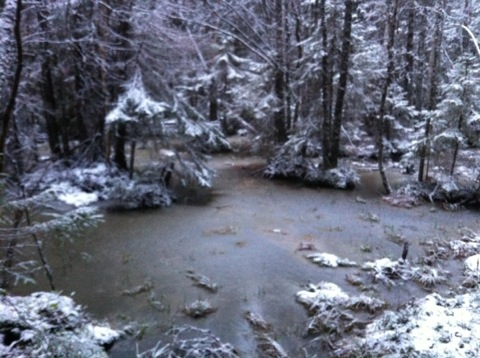
Skogskärr på Andersön den 10 december 2011. Foto; Ronny Fredriksson
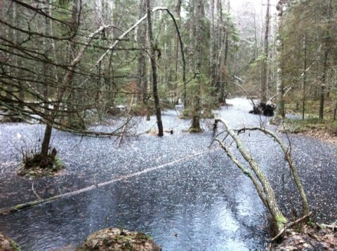
Snön kommer…skogskärr med blankas på Andersön januari 2012. Foto: Ronny Fredriksson
Upplandsleden väst (inklusive Stormon och Brändöns kolarkoja) och öst mellan Vika och Risön
Följ länk och se informations pdf från Upplandsstiftelsen på sidan dokument om Florarna.
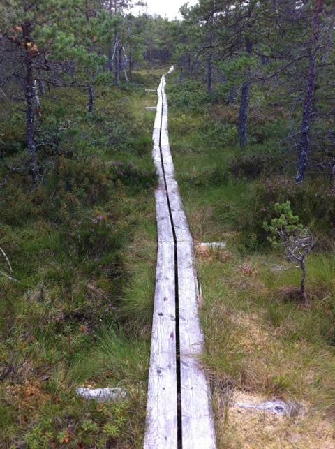
Kungaspången går över mossmarkerna mellan Risön och Stenstamon. Den är 500-meter lång och var en gåva från Försvarsmakten till vår Kung när han fyllde 50 år. Upplandsledens östra sträckning genom Florarna. Foto: Ronny Fredriksson
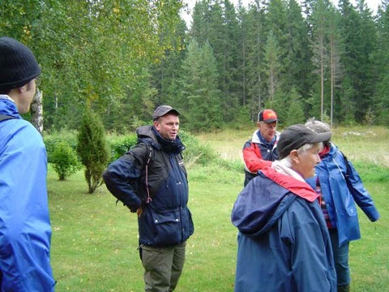
Jag i centrum….hmm…vid guidning på Upplandsledens dag på den tiden jag var tillsynsman. Här vid en paus vid tillsynsmannatorpet Västergärdet. Foto: Hans-Eric Nordin
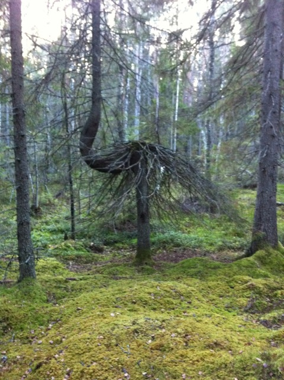
Den s.k. ”Huldragranen” som står en bit norr om Stormon vid Upplandsledens västra sträckning. Foto: Ronny Fredriksson
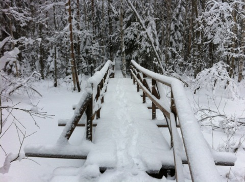
Bron över Gammelån, östra sträckningen av Upplandsleden. Foto: Ronny Fredriksson
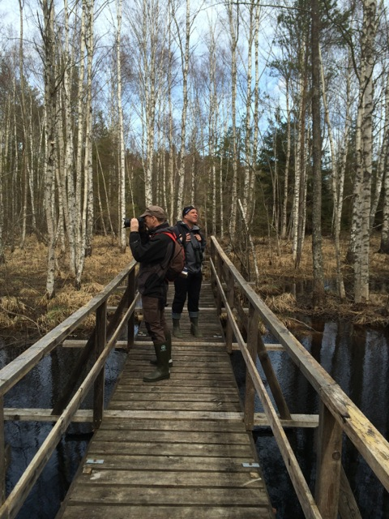
Bron över Gammelån. Foto: Ronny Fredriksson
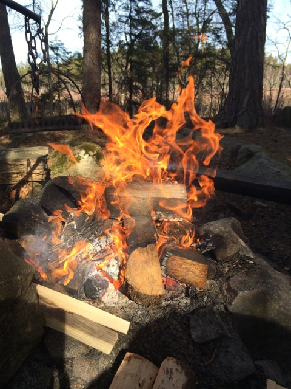
Sprakande eld vid Karbotten (Grillholmen) med Storfloran i bakgrunden. Foto: Ronny Fredriksson
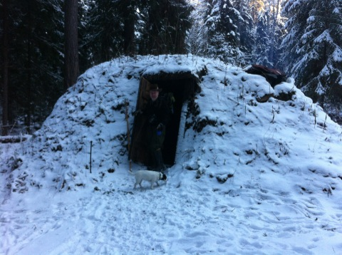
Kolarkojan nås på en avstickare från Upplandsledens västliga sträckning. Foto: Ronny Fredriksson
Gammelåstigen
Stig som följer Gammelån mellan Upplandsledens västra och östra sträckning. Delvis fin sumpskog med döende björkar. Vid vårfloden kan stigen vara översvämmad och då hänvisas till Florbergsstigen (torrstigen).
Hagels runda
Kortare led i anslutning till lägergården Risön och tillsynsmannatorpet Västergärdet. Lämplig för exkursioner, tipspromenader och en kortare skogspromenad. Märkt med vita markeringar. Börjar vid lägergården Risön och går efter vägen över ängarna väster om Risön. Där ängarna upphör lämnar leden vägen och går upp i skogen söderut. Både nyare planterad skog och äldre naturskog passeras efter Hagels runda. I anslutning till leden kan resterna av en gammal kolarkoja ses. Odlingsrösen etc. Rundan kommer sedan ut vid ängarna i anslutning till tillsynsmannatorpet Västergärdet och går sedan tillbaks efter vägen mot lägergården Risön.
Leden är döpt till minne av naturreservatet Florarnas mångårige tillsynsman Holger Hagel.
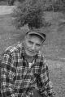
Holger Hagel
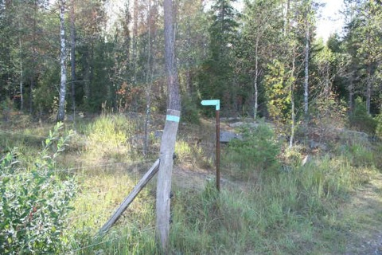
Gär går Hagels runda av vägen och in skogen söderut. Foto: Ronny Fredriksson
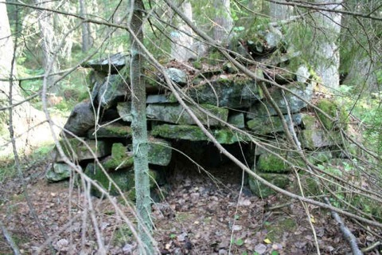
I anslutning till Hagels runda ligger denna gamla rest av en kolarkoja. Foto: Ronny Fredriksson
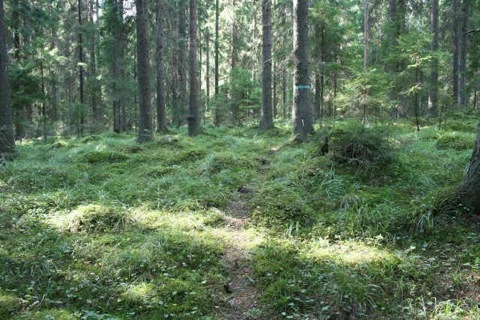
Hagels runda. Foto: Ronny Fredriksson
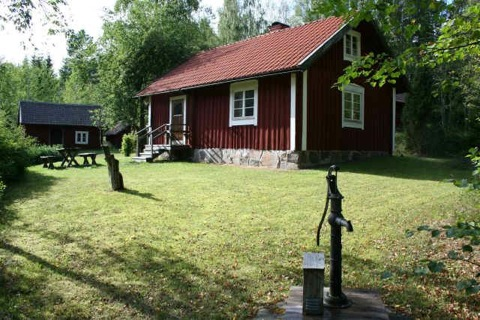
Tillsynsmannatorpet Västergärdet passeras av Hagels runda. Foto: Ronny Fredriksson
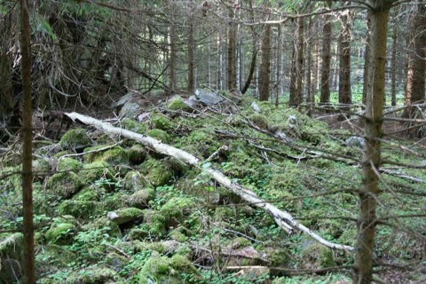
Ett gammalt odlingsröse i den planterade granskogen. Foto: Ronny Fredriksson
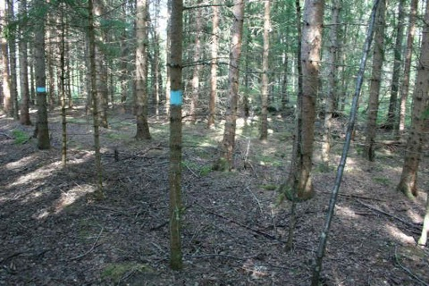
Igenplanterade gamla ängar/åkrar i anslutning till Hagels runda. Foto: Ronny Fredriksson
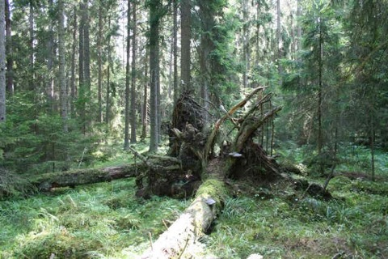
Granar i varierande ålder. Foto: Ronny Fredriksson
Florbergsstigen (torrstigen)
Stig över Florberget mellan Upplandsledens västra och östra sträckning över Florarna. Går delvis genom fin naturskog. Märkt med gula markeringar.
Lönnbergsstigen
Mörkret vägen
Vägen till det fd torpet Mörkret på Norrberget börjar vid vägskälet i Andersbo (vid landsvägen mellan Österbybruk och Lövstabruk). En grusväg går där i rak västlig riktning in mot naturreservatet Florarna. Vägen går förbi kohagar och de gamla torpen vid Svedjan. Efter en stund kommer en bom. Denna står i princip alltid öppen…strax innan bommen norr om vägen ligger en gammal lada där det en gång legat ett torp…här har också den gamla vägen till mörkret tidigare gått. Men idag har vägen en nyare sträckning, dvs den som går förbi bommen.
Till slut kommer vägen till en stor vändplan. Men det går att köra ytterligare några hundra meter på den skogsväg som fortsätter i bortre änden av vändplanen, här kommer även den gamla Mörkret vägen fram som nämnts ovan. Lämpligt att parkera cykel eller bil är på en liten plan yta innan den stora backe som kommer.
Därefter följer ni vägen vidare uppför backen. Uppe på backen finns den sk ”lyssnarstenen”. Fortsätt vidare nerför backen efter skogsvägen och här passeras en reservatskarta…ligger lite till höger om vägen…kan vara dold av vegetationen. Här börjar reservatet. Den gamla vägen till mörkret går här inne till höger i skogen….medan du sannolikt går på en modernare vägbank som följer reservatsgränsen. Till slut kommer en liten plan även här…där går du in till höger efter den stig som syns…..in på Norrberget….stigen eller snarare den gamla vägen tar slut där torpet Mörkret en gång låg. Mellan reservatsgränsen och fd torpet Mörkret ligger även en kolbotten och resterna efter en gammal kolarkoja, men det kräver att man har ögonen med sig.
Ursprungligen fortsatte stigar västerut på Norrberget och ända fram till Norrbergskojan, men resterna av dessa ses endast sporadiskt och är svåra att följa.
Skälsjöstigen
Gullstigen
I södra kanten av Florarna (utanför naturreservatet) går den markerade vandringsleden Gullstigen.
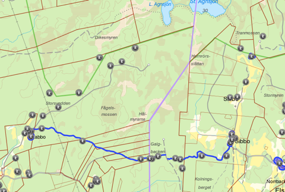
Den blå linjen är Gullstigen.
Gullstigen är 5,5 kilometer lång och går mellan Sibbo i Films socken och Labbo i Tegelsmora socken. Gullstigen anses vara kulturhistoriskt intressant och är skyddad. Riksantikvarieämbetet har beteckningen RAÄ 16 på Gullstigen.
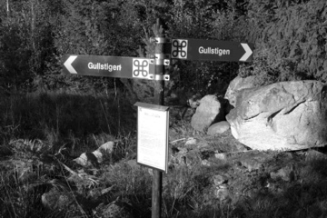
Vägvisare för Gullstigen norr om Forsvik, Dannemora. Foto: Ronny Fredriksson
Gullstigen är en tusenårig klövjestig. Gullstigen har på flera ställen sk hålvägskaraktär och är på flera ställen omsluten av vällagad stenvallar, bredden varierar mellan 0,5 meter och 1,5 meter.
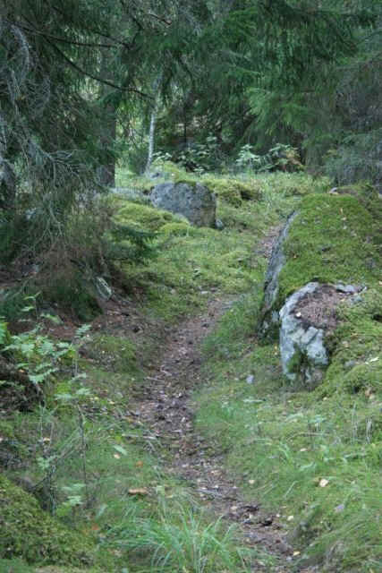
Gullstigen vid Bålet eller galgbacken nära sockengränsen. Foto: Ronny Fredriksson
Utefter Gullstigen finns flera intressanta platser bla det gamla torptunet Rönnvik, där det en gång i tiden fanns ett gruvarbetartorp. Den gamla brunnen eller kanske snarare stensatta källan som hörde till torpet finns fortfarande kvar.
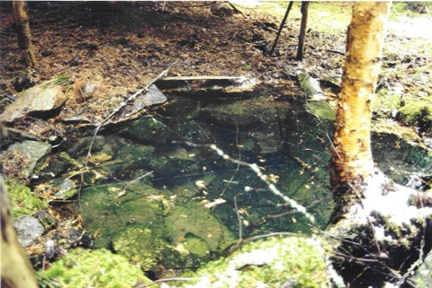
Den stensatta källan/brunnen vid fd gruvarbetartorpet Rönnvik. Foto: Ronny Fredriksson
En ”jättesten” finns att beskåda som kallas Biskopstenen. En jätte som bodde i närheten av Tegelsmora lär ha burit stenen för att krossa kyrkan i Film. Men det var tungt även för en jätte. När han mötte en gubbe på stigen och frågade hur långt det var kvar till kyrkan i Film och fick beskedet att han enbart kommit halvvägs gav han upp och lämnade stenen där den ligger idag.
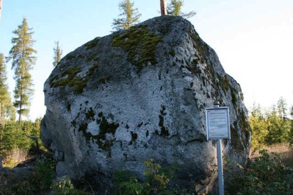
Biskopstenen. Foto: Ronny Fredriksson
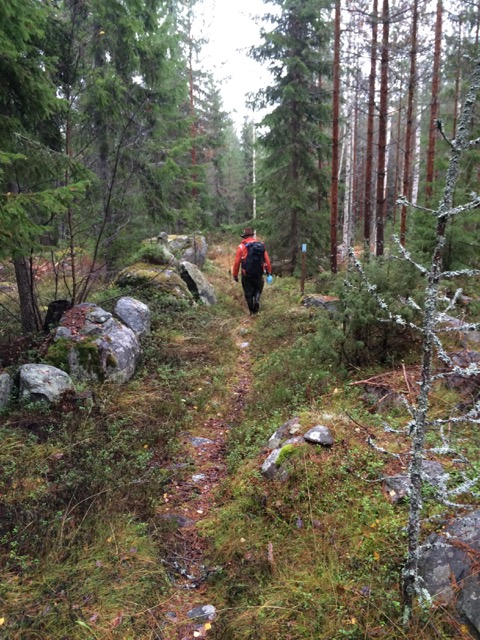
En vandring efter Gullstigen i oktober 2014. Foto: Ronny Fredriksson
En sägenomsusad plats som Gullstigen går förbi är Bålet även kallat galgbacken precis på gränsen mellan Films och Tegelsmora socken. Platsen är registrerad hos Riksantikvarieämbetet med beteckningen RAÄ 226. Platsen är en gammal avrättningsplats och den sista människa som blev avrättad där var Vibo-Stina, eller Stina Pehrsdotter, född den 15 mars 1806 och avrättad den 19 juli 1845. Hon avrättades på grund av att hon tagit livet av sin make med hjälp av arsenik. Hennes gravplats ligger strax öster om avrättningsplatsen och är markerad med en järnstolpe.
Enligt en annan sägen, skall en soldat under Karl den XII:s dagar ha tagit med en turkisk kvinna från kriget hem till Norrtorpen. Han gifte sig med henne och de fick ett barn. Soldaten for åter ut i krig i främmande land och hustrun fick gå där ensam i det lilla torpet i Norrtorpen. Hon vantrivdes och blev så småningom sinnessjuk och tog livet av sitt barn. Hon dömdes till döden och skulle avrättas genom halshuggnin vid Bålet (även benämnt Båhlslätten) / galgbacken. När hon fördes från Sibbo mot Bålet såg hon sig omkring i trance och ropade ”det är gull, bara gull”. Folket i trakten trodde att hon trots allt blev lycklig efter döden, efter detta fick stigen namnet Gullstigen. Vid avrättningsplatsen finns resterna av ett stenfundament, där en galge sannolikt varit rest.
Under medeltiden var Gullstigen den bästa vägen mellan socknarna Film och Tegelsmora. Detta gjorde att både kungens och kyrkans fogdar flitigt använde Gullstigen för uppbördsuppgifter, vilket gjorde att en del värde transporterades denna väg. Detta skall också ha bidragit till namnet Gullstigen.
Efter Gullstigen i Tegelsmora socken, nära gården Labbo, finns en återuppförd kolarkoja, den sk Gullstigskojan.
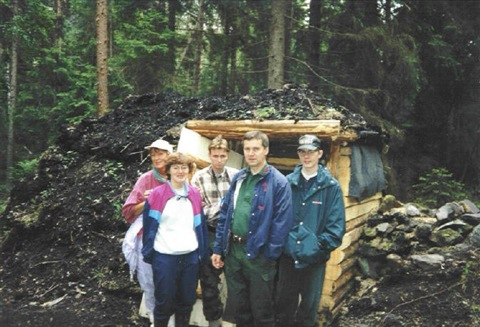
Gullstigskojan 1994. Nyuppförd och med skogen kvar. Foto: Ronny Fredriksson
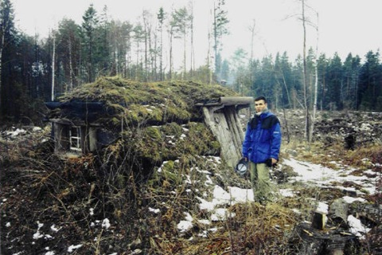
Gullstigskojan 2003. Ingen hänsyn av skogsägaren. Foto: Ronny Fredriksson
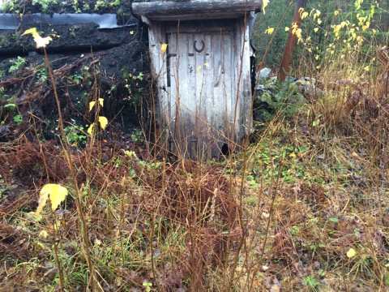
Gullstigskojan 2014. I förfall. Ingen vårdar den längre? Foto: Ronny Fredriksson
Sibbo - Stormokojan
Vintervägarna
Rackarnäbben - Fillsartrusket
Labbo - Lilla Agnsjön/ Agnsjöstugan
Lilla Agnsjön/Agnsjöstugan - Stora Agnsjön - Fillsartrusket
Stormon - Sibbo alternativt Stora Agnsjön
Stormon - Staffans holme/ Vikasjön/ Norrbergskojan
Sjudars - Stormossarna - Vikasjön/Norrbergskojan
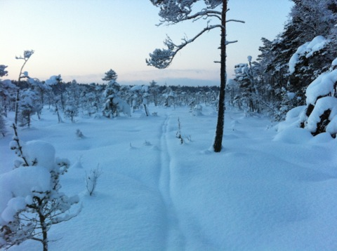
Översnöat skidspår mellan Sjudars och Vikasjön. Stormossarna. Foto: Ronny Fredriksson
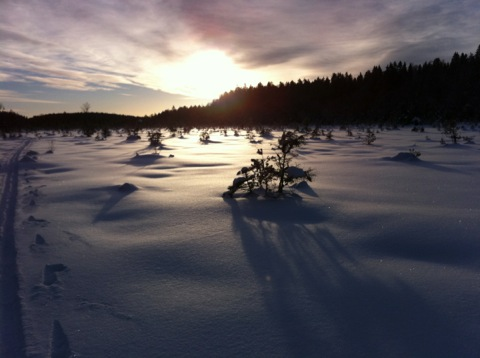
Vill erkänna en sak. Jag älskar att åka skidor på Florarna. Stormossarna. Foto: Ronny Fredriksson
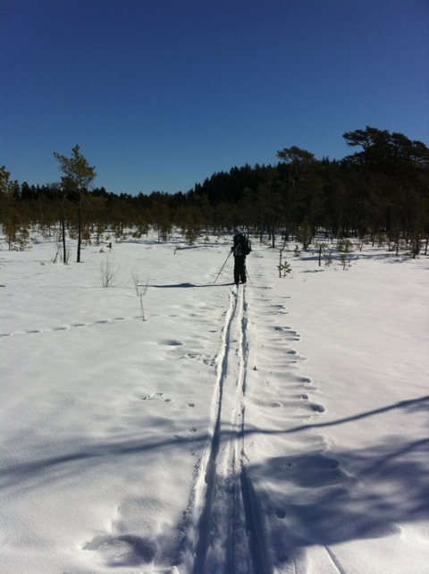
Min systerdotter, Jennifer, i skidspåret på Stormossarna den 20 mars 2011. Foto: Ronny Fredriksson
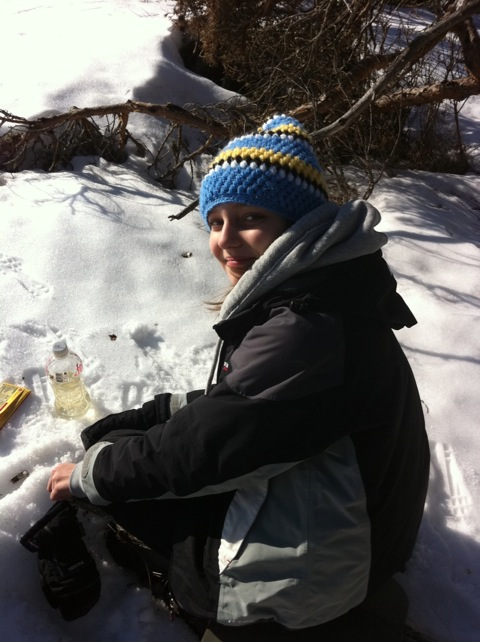
Jennifer vid fikarast i kanten av Gammelholmen, Stormossarna den 20 mars 2011. Foto: Ronny Fredriksson
Stormon - Storfloran/Karbotten - Brändöns kolarkoja